Number Play
Q. Think about various situations where we use numbers. List five different situations in which numbers are used. See what your classmates have listed, share, and discuss.
Ans. Five different possible situations in which numbers are used -
- 1.Time
- 2.Calendar
- 3.Counting objects/Marks
- 4.Measurement of height & weight
- 5.Money
There could many more.
Section 3.1
Page No. 55
Q. What do you think these numbers mean?
Ans. Refer page 56.
Page No. 56
Q1. Can the children rearrange themselves so that the children standing at the ends say
‘2’?
Ans. No; There will be no one standing on the other side of the child standing at the end.
Q2. Can we arrange the children in a line so that all would say only 0s?
Ans. Yes; All the children in the line should be of same height.
Q3. Can two children standing next to each other say the same number?
Ans. Yes; Refer picture on page 55.
Q4. There are 5 children in a group, all of different heights. Can they stand such that four
of them say ‘1’ and the last one says ‘0’? Why or why not?
Ans. Yes, they can, if they are standing in ascending order of height.
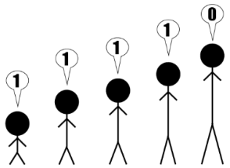
Q5. For this group of 5 children, is the sequence 1, 1, 1, 1, 1 possible?
Ans. No; the tallest child at the end cannot say1.
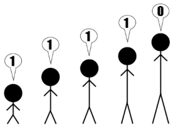
Q6. Is the sequence 0, 1, 2, 1, 0 possible? Why or why not?
Ans. Yes, it is possible.
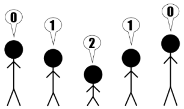
Q7. How would you rearrange the five children so that the maximum number of children
say ‘2’?
Ans. At the most only 2 children can say 2 as given is the following arrangement.
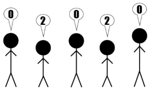
Section 3.2
Page No. 57
Figure it out
Q1. Colour or mark the supercells in the table below.
6828 670 9435 3780 3708 7308 8000 5583 52
Ans.
6828 670 9435 3780 3708 7308 8000 5583 52
Q2. Fill the table below with only 4-digit numbers such that the supercells are exactly the
coloured cells.
5346 1258 9635
Ans. One of the ways could be-5346; 9636.Try more
5346 5347 1000 1258 1100 1200 1300 9635 9636
Q3. Fill the table below such that we get as many supercells as possible. Use numbers
between 100 and 1000 without repetitions.
Ans.
110 100 150 130 280 200 230 210 270
Q4. Out of the 9 numbers, how many supercells are there in the table above? ___________
Ans. 5
Q5 Find out how many supercells are possible for different numbers of cells.
Do you notice any pattern? What is the method to fill a given table to get the maximum number of supercells? Explore and share your strategy.
Ans. For even number of cells say,2,4,6,… the number of supercells would be respectively,
\(2/2 =1,4/2\) =2,6/2=3,…
For odd number of cells , say 1,3,5,7,… the number of supercells would be respectively
\((1+1)/2= 1\), \((3+1)/2 = 2\), \((5+1)/2= 3,(7+1)/2 =\) 4,…
To get the maximum number ofsupercells, we have to start by filling the first cell as super cell & then fill alternately.
Q6. Can you fill a supercell table without repeating numbers such that there are no supercells? Why or why not?
Ans. No; the cell which is filled by the greatest number among the given numbers chosen, will
become super cell irrespective of its position in the table.
Q7. Will the cell having the largest number in a table always be a supercell? Can the cell having the smallest number in a table be a supercell? Why or why not?
Ans. Yes, the largest number in a table will always be a supercell.
No, the smallest number in a table can never be a supercell as the number in all the adjacent cells will be greater than it.
Q8. Fill a table such that the cell having the second largest number is not a supercell.
Ans. One of the ways could be-
Q9. Fill a table such that the cell having the second largest number is not a supercell but the second smallest number is a supercell. Is it possible?
Ans. One of the ways is-
Second smallest number Second largest number a super cell 2 1 3 4 5 6 7 9 8 8 is not a supercell.
Q10. Make other variations of this puzzle and challenge your classmates.
Ans. Some of these could be-
Can you fill the table with 9 cells such that there are more than 5 super cells? Can you fill the table with 9 cells such that there are exactly 4 super cells?
Page No. 58
Q. Complete Table 2 with 5-digit numbers whose digits are ‘1’, ‘0’, ‘6’, ‘3’, and ‘9’ in some order. Only a coloured cell should have a number greater than all its neighbours.
Ans. Table 2 (One of the ways) -
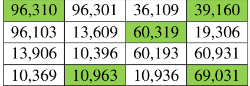
Q. The biggest number in the table is ____________.
Ans. The biggest number in the table is 96,310
Q. The smallest even number in the table is ____________.
Ans. The smallest even number in the table is 10,396
Q. The smallest number greater than 50,000 in the table is ____________.
Ans. The smallest number greater than 50,000 in the table is 60,193.
Section 3.3
Page no.59
Q. We are quite familiar with number lines now. Let’s see if we can place some numbers in their appropriate positions on the number line. Here are the numbers: 2180, 2754, 1500, 3600, 9950, 9590, 1050, 3050, 5030, 5300 and 8400.
Ans.
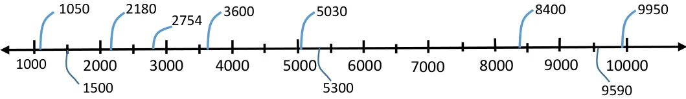
Q. Identify the numbers marked on the number lines below, and label the remaining positions.
(a).
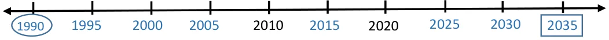
(b).
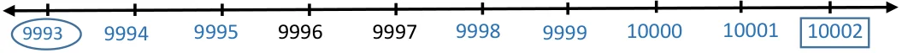
(c).
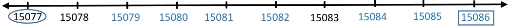
(d).
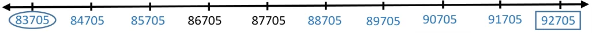
Put a circle around the smallest number and a box around the largest number in each of the sequences above.
Section 3.4
Page no. 60
Q. Find out how many numbers have two digits, three digits, four digits, and five digits:
1 Digit 2 Digit 3 Digit 4 Digit 5 Digit numbers numbers numbers numbers numbers 9
Ans.
1 Digit numbers 2 Digit numbers 3 Digit numbers 4 Digit numbers 5 Digit numbers 9 90 900 9,000 90,000
Figure it out
Q.1. Digit sum 14
- a.Write other numbers whose digits add up to 14.
- b.What is the smallest number whose digit sum is 14?
- c.What is the largest 5-digit number whose digit sum is 14?
- d.How big a number can you form having the digit sum 14? Can you make an even
bigger number?
Ans. a. Some such numbers are:248, 653, 356, 815, 833, 12335, 23351.
- b.59
- c.95000
- d.95, 9005, 900005, 90000005, 9000000005, 90000000000005 …
Q.3. Calculate the digit sums of 3-digit numbers whose digits are consecutive (for
example, 345). Do you see a pattern? Will this pattern continue?
Ans. \(123 \to 1+2+3 = 6 234 \to 2+3+4 = 9 345 \to 3+4+5 = 12 456 \to 4+5+6 = 15 567 \to 5+6+7 = 18 678 \to 6+7+8 = 21 789 \to 7+8+9 = 24\)
- •Yes, there is a pattern, all the sums are multiples of 3.
- •No.
Page no. 61
Q. Among the numbers \(1 - 100\), how many times will the digit ‘7’ occur? Among the numbers \(1 - 1000\), how many times will the digit ‘7’ occur?
Ans.
- •20 times.
- •300 times.
Section 3.5
Page no. 61
Q. Write all possible 3-digit palindromes using these digits.
Ans. Palindromes: 111, 121, 131
222, 212, 232 313, 323, 333
Explore Page no. 62 Q. Will reversing and adding numbers repeatedly, starting with a 2-digit number, always give a palindrome? Explore and find out.*
Some of these are- 12 47
\(\frac{+21}{33} \frac{+74}{121}\)
Try more Yes, it will always give a palindrome.
Puzzle time
Q. I am a 5-digit palindrome. I am an odd number. My ‘t’ digit is double of my ‘u’ digit. My ‘h’ digit is double of my ‘t’ digit. Who am I? _________________
Ans. tth th
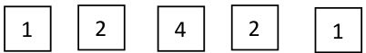
Section 3.6 Page no. 63
Q. Carry out these same steps with a few 3-digit numbers. What number will start repeating?
Ans.
Take a 3- Digit number say, 321. 321 981 972 963 954 954
\(\frac{-123}{198} \frac{-189}{792} -279 693 -369 594 -459 495 -459 495\)
The number 495 starts repeating.
Try for other 3-digit numbers.
Section 3.7 Page no. 64 Q. Try and find out all possible times on a 12-hour clock of each of these types.
Ans. 4:44 2:22 3:33
10:10 11:11 12:12 09:09 12:21 05:50 10:01 Think of some more!
Q. Find some other dates of this form from the past.
Ans. 20/04/2004, 20/06/2006, Try for yourself!
Q. Find all possible dates of this form from the past.
Ans. 01/02/2001, 02/02/2002, Think of some more!
Q. Will any year’s calendar repeat again after some years? Will all dates and days in a
year match exactly with that of another year?
Ans. Yes,
The calendar repeats itself after 6 years if only one leap year is included in these 6 years. If 2 leap years are included, then it will repeat after 5 years.
Page no. 64
Figure it out Q.1. Pratibha uses the digits ‘4’, ‘7’, ‘3’ and ‘2’, and makes the smallest and largest 4-
digit numbers with them: 2347 and 7432. The difference between these two numbers is \(7432 - 2347 = 5085\). The sum of these two numbers is 9779. Choose \(4 -\) digits to make:
- a.the difference between the largest and smallest numbers greater than 5085.
- b.the difference between the largest and smallest numbers less than 5085.
- c.the sum of the largest and smallest numbers greater than 9779.
- d.the sum of the largest and smallest numbers less than 9779.
Ans. Some of the possibilities are -
- a.\(7431 - 1347 = 6084\)
- b.\(7433 - 3347 = 4086\)
- c.\(7433 + 3347 = 10780\)
- d.\(7431 + 1347 = 8778\)
Q.2. What is the sum of the smallest and largest 5-digit palindrome? What is their
difference?
Ans. Smallest 5 digit palindrome \(= 10001\)
largest 5 digit palindrome \(= 99999\)
Sum \(= 10001 + 99999 = 110,000\) Difference \(= 99999 - 10001 = 89,998\)
Q.3. The time now is 10:01. How many minutes until the clock shows the next palindromic
time? What about the one after that?
Ans. Time Now \(\to 10:01\) Next palindrome time \(\to 11:11\) After 1 hr. 10 min \(= 70\) min the clock will show next palindrome time. Next palindrome time \(= 12:21\) which will occur after 2 hr. 20 min \(= 140\) min from 10:01.
Q.4. How many rounds does the number 5683 take to reach the Kaprekar constant?
Ans. 5683
\(8653 8550 9432 8730 6552 9963 6642 7641 \frac{-3568}{5085} \frac{-5058}{3492} \frac{-2349}{7083} \frac{-3078}{5652} \frac{-2556}{3996} \frac{-3699}{6264} \frac{-2466}{4176} \frac{-1467}{6174} 1 2 3 4 5 6 7 8\) It will take 8 rounds to reach the Kaprekar constant.
Page no. 66 Section 3.8 Q. Can we make 1,000 using the numbers in the middle? Why not? What about 14,000, 15,000 and 16,000? Yes, it is possible. Explore how. What thousands cannot be made?
Ans. No; the only number which is smaller than 1000 is 400 and 1000 is not a multiple of 400.
\(14000 = 1500 \times 8 + 400 \times 5\)
\(= 12000 + 2000 = 14000\)
\(15000 = 13000 + 400 \times 5\)
\(= 13000 + 2000 = 15000\)
\(16000 = 1500 \times 8 + 400 \times 10\)
\(= 12000 + 4000 = 16000\)
Only one thousand (1000) cannot be made.
Figure it out
Q.1. Write an example for each of the below scenarios whenever possible.
Could you find examples for all the cases? If not, think and discuss what could be the reason. Make other such questions and challenge your classmates.
Ans.
- •5 digit \(+ 5\) digit \(> 90,250\)
\(45,000 + 45,400 = 90,400 > 90,250\)
- •5 digit \(+ 3\) digit \(= 6\) digit sum
\(99,999 + 999 = 100,998\)
- •4 digit \(+ 4\) digit \(= 6\) digit sum
Not possible as even the sum of the greatest 4 digit numbers will not give a six digit sum. \((9999 + 9999 = 19,998)\)
- •5 digit \(+ 5\) digit \(= 6\) digit sum
\(60,000 + 40,000 = 1,00,000\)
- •5 digit \(+ 5\) digit \(= 18,500\)
Not possible as smallest 5-digit number is 10,000. If both the numbers are 10,000 then the sum is 20,000, which is more than 18,500.
- •5 digit \(- 5\) digit \(< 56,503\)
\(80,000 - 50,000 < 56,503\)
\(< 56,503\)
- •5 digit \(- 3\) digit \(= 4\) digit difference
\(10,000 - 999 = 9001\)
- •5 digit \(- 4\) digit \(= 4\) digit difference
\(12,000 - 2,500 = 9,500\)
- •5 digit \(- 5\) digit \(= 3\) digit difference
\(50,999 - 50,000 = 999\)
- •5 digit \(- 5\) digit \(= 91,500\)
Not possible as the difference of the greatest and the smallest 5 digit numbers, the maximum difference, can be \(99,999 - 10,000 = 89,999\)
Some examples of other such questions are-
- 1.5 digit \(+ 5\) digit \(= 7\) digit sum
- 2.4 digit \(+ 4\) digit \(= 2900\)
More such examples can be made.
Q.2. Always, Sometimes, Never?
Below are some statements. Think, explore and find out if each of the statement is ‘Always true’, ‘Only sometimes true’ or ‘Never true’. Why do you think so? Write your reasoning; discuss this with the class.
- a.5-digit number + 5-digit number gives a 5-digit number
- b.4-digit number + 2-digit number gives a 4-digit number
- c.4-digit number + 2-digit number gives a 6-digit number
- d.5-digit number - 5-digit number gives a 5-digit number
- e.5-digit number - 2-digit number gives a 3-digit number
Ans. a. Only sometimes true.
\(20,000 + 80,000 = 1,00,000\) not a 5 digit number
- b.Only sometimes true
\(9,999 + 99 = 10,098\) not a 4 digit number
- c.Never true
\(9,999 + 99 = 10,098\)
On adding the greatest 4 digit and the greatest 2 digit numbers, we can reach only 5 digit number 10,098. So there is no possibility of getting a 6 digit number.
- d.Only sometimes true
Ex. \(12,000 - 10,000 = 2,000\)
5 digit \(- 5\) digit \(= 4\) digit
- e.Never true
Ex. \(10,000 - 99 = 9901\)
Even if the greatest 2 digit numbers is subtracted from the smallest 5 digit number, 4 digit number will be obtained.
Page no. 69 Section 3.10 Q. Make some more Collatz sequences like those above, starting with your favourite whole numbers. Do you always reach 1? Do you believe the conjecture of Collatz that all such sequences will eventually reach 1? Why or why not?
Ans. a) 28, 14, 7, 22, 11, 34, 17, 52, 26, 13, 40, 20, 10, 5, 16, 8, 4, 2, 1
- b)19, 58, 29, 88, 44, 22, 11, 34, 17, 52, 26, 13, 40, 20, 10, 5, 16, 8, 4, 2, 1
Yes we always reach 1. The even numbers are halved and when we have an odd number we convert it into an even number by multiplying by 3 and adding 1 so that eventually it can be halved again. The smallest even number is 2 so we will reach 1 for sure.
Q.3. Name some objects around you that are:
- a.a few thousand in number
- b.more than ten thousand in number
Ans. A few thousands: car numbers, 4 digit pin
More than ten thousands: Salary, Mobile numbers.
Q.3. Roshan wants to buy milk and 3 types of fruit to make fruit custard for 5 people. He
estimates the cost to be ₹ 100. Do you agree with him? Why or why not?
Ans. Yes, it is possible with less quantity of serving and with purchase of 1-1-1 fruit of each
type. However, it is not possible with costly fruits and more quantity of serving.
Q.4. Estimate the distance between Gandhinagar (in Gujarat) to Kohima (in Nagaland).
Ans. 2500 kilometer
Q. 5. Sheetal is in Grade 6 and says she has spent around 13,000 hours in school till date.
Do you agree with her? Why or why not?
Ans. No, I do not agree with her.
There are 6 school hours in a day and around 200 working days in a year.
\(\frac{𝟏𝟑,𝟎𝟎𝟎}{𝟔 \times 𝟐𝟎𝟎} = 10.8\) years
(Nursery, KG, 1,2,3,4,5,6) 8 years She is in school for 8 years, 13,000 hours is way too high.
Q.7. Make some estimation questions and challenge your classmates!
Ans. Some such are
- •How many students are there in your school?
- •How many hours does a person sleep in his lifetime on an average?
(More such questions can be made)
Section 3.12 Page No. 72 Figure it Out Q.1. There is only one supercell (number greater than all its neighbours) in this grid. If
you exchange two digits of one of the numbers, there will be 4 supercells. Figure out which digits to swap.
16,200 29,765
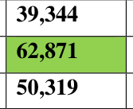
23,609 45,306
19,381 38,408
Ans. If I exchange the digits 1 and 6 in the number 62,871 then there will be 4 Super cells.
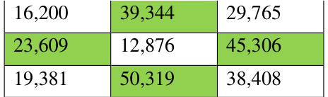
Q.2. How many rounds does your year of birth take to reach the Kaprekar constant?
Ans. Suppose the birth year is 1980, then, -
\(9810 8721 7443 9963 6642 7641 \frac{-1089}{8721} \frac{-1278}{7443} \frac{-3447}{3996} \frac{-3699}{6264} \frac{-2466}{4176} \frac{-1467}{6174}\)
It takes 6 rounds. (Try now for your year of birth.)
Q.3. We are the group of 5-digit numbers between 35,000 and 75,000 such that all of our
digits are odd. Who is the largest number in our group? Who is the smallest number in our group? Who among us is the closest to 50,000?
Ans.
With repeating digit With non repeating digit Largest number \(\to 73,999 73,951\)
Smallest number \(\to 35,111 35,179\)
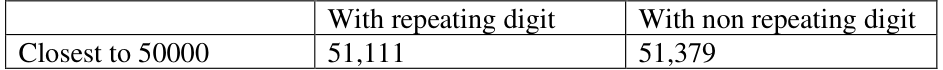
Q.6. Write one 5-digit number and two 3-digit numbers such that their sum is 18,670.
Ans. \(18000 + 300 + 370 = 18670\). Try for more.
Q.7. Choose a number between 210 and 390. Create a number pattern similar to those
shown in Section 3.9 that will sum up to this number.
Ans. Number Chosen: 250
Or
10 10 10 10 10 10 10 10 10 10 10 10 10 10 10 10 10 10 10 10 10 10 10 10 10
Q.8. Recall the sequence of Powers of 2 from Chapter 1, Table 1. Why is the Collatz
conjecture correct for all the starting numbers in this sequence?
Ans. when we divide \(2 = 2x2x2x2x2x2x2x2\) by 2 it become 2 and every time you divide
by 2 the same will continue happening, until you are left with 2 which when divided by 2 will leave 1.
Q.9. Check if the Collatz Conjecture holds for the starting number 100.
Ans. 100, 50, 25, 76, 38, 19, 58, 29, 88, 44, 22, 11, 34, 17, 52, 26, 13, 40, 20, 10, 5, 16, 8, 4,
2, 1.
Q.10 Starting with 0, players alternate adding numbers between 1 and 3. The first person
to reach 22 wins. What is the winning strategy now?
Ans. Winning strategy is to be the first player.